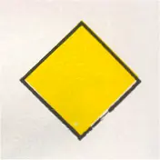
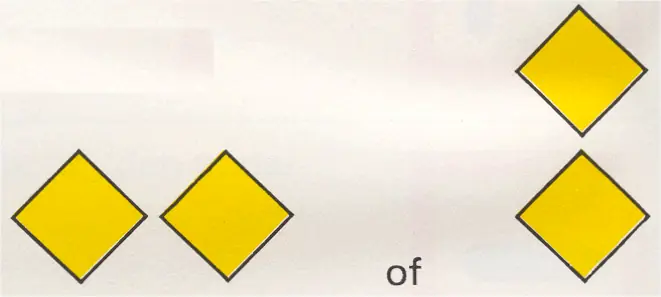
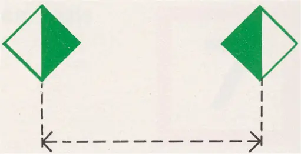
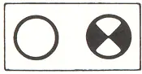

D AANBEVELINGSTEKENS
Rijnvaartpolitiereglement 1995
D.1 | Aanbevolen doorvaartopening. a. Doorvaart uit de tegengestelde richting toegestaan. (artikel 6.25, lid 2 onder a) |  |
b. Voor verkeer uitsluitend in de richting waarin de tekens zichtbaar zijn (Doorvaart uit de tegengestelde richting verboden) (artikel 6.25, lid 2, onder b) |  | |
D.2 | Aanbeveling binnen de aangegeven begrenzing te varen. (artikel 6.24, lid 2 onder b) |  |
D.3 | Aanbeveling te varen in de richting aangegeven door: a. de pijl. | |
b. het isofase licht. |  |